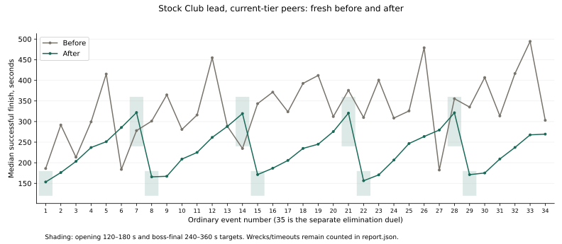
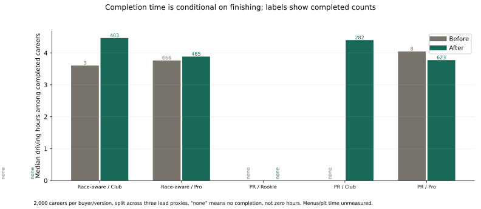
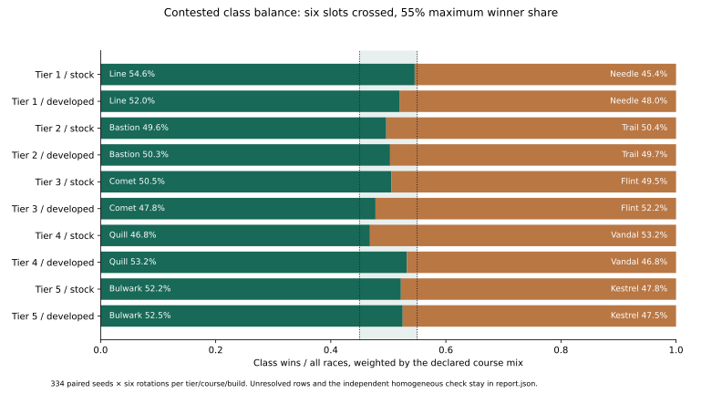
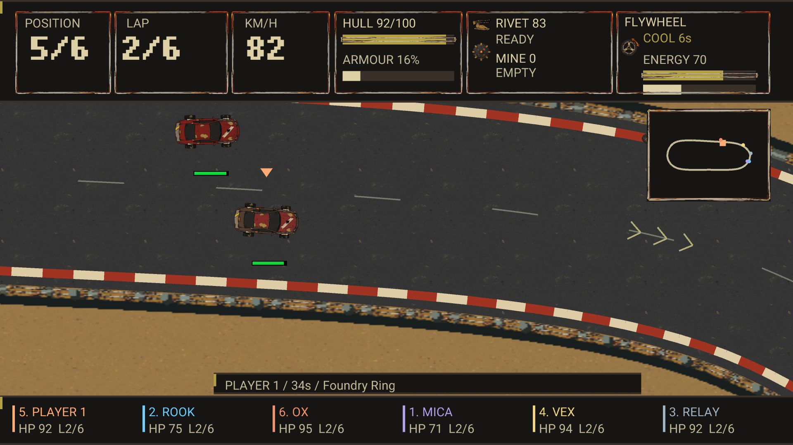
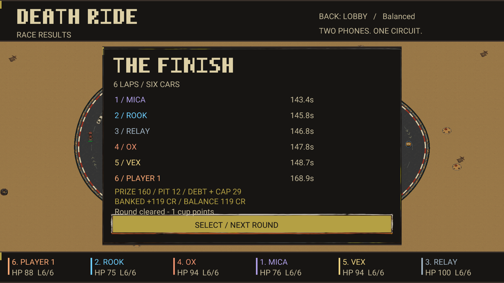

Needle temperament
Race first; avoid deliberate contact; dart into a clear straight.
DEATH RIDE / Z4 / OWNER REVIEW / 04 OCT 2026
Review the opponent temperaments, bounded leader hunts and shorter lap schedule. The implementation passes correctness checks; the balance evidence still has material gaps.
Static and offline. Choices start unselected, stay in this browser, and do not apply changes to the game. Expand the owner-choice panels to record Keep, Maybe or Reject and a note. Export before moving this folder or changing browsers.
Opening stock/current-tier Club medians meet 120–180 s; ordinary bosses meet 240–360 s. Foundry’s opening p90 is 237.90 s. Faster builds, weak builds and human driving can fall outside those ranges.
Contact and block are willingness dials, not hit probabilities. Range is in the acting car’s lengths; lane risk controls road margin, never grip. Target weights are leader / nearby / damaged. All current drift-use dials are zero. Ability tells, energy, cooldown and recovery still apply.
| Car | Intent | Contact | Block | Range (lengths) | Lane risk | Target weights | Ability rule / cadence | Drift use |
|---|---|---|---|---|---|---|---|---|
| Needle | Race first; avoid deliberate contact; dart into a clear straight. | 0.10 | 0.10 | 4.5 | 0.50 | 0.20 / 1.0 / 0.20 | Steel Flick: Clear straight, settled, minimum speed; every 1 decision(s) | 0 |
| Line | Race first; carry straight-line speed with Flywheel. | 0.15 | 0.20 | 4.0 | 0.50 | 0.25 / 1.0 / 0.20 | Flywheel: Clear straight, settled, minimum speed; every 1 decision(s) | 0 |
| Bastion | Close bruiser; align a forward Shoulder charge. | 0.90 | 0.70 | 1.8 | 0.60 | 0.55 / 1.0 / 0.70 | Shoulder: Target ahead, straight, settled, minimum speed; every 1 decision(s) | 0 |
| Comet | Straight-line overtaker; wait for a clear, settled Turbine run. | 0.15 | 0.25 | 5.0 | 0.55 | 0.40 / 0.8 / 0.30 | Turbine: Clear straight, settled, minimum speed; every 1 decision(s) | 0 |
| Trail | Race first; use Ground Bite in loose-surface corners. | 0.10 | 0.20 | 3.5 | 0.50 | 0.25 / 1.0 / 0.20 | Ground Bite: Loose surface, corner, minimum speed; every 1 decision(s) | 0 |
| Flint | Brawler with ranged Punch Lance; consider ability every second decision. | 0.65 | 0.55 | 4.5 | 0.58 | 0.55 / 0.8 / 0.70 | Punch Lance: Target ahead on straight; every 2 decision(s) | 0 |
| Quill | Contact fighter; align Bone Rack with a car in front or behind. | 0.85 | 0.55 | 1.5 | 0.60 | 0.50 / 1.2 / 0.50 | Bone Rack: Target ahead or behind, minimum speed; every 1 decision(s) | 0 |
| Vandal | Block and brawl; drop Scrambler when a rear target is present. | 0.70 | 0.80 | 2.5 | 0.60 | 0.60 / 1.0 / 0.50 | Scrambler: Target behind, minimum speed; every 1 decision(s) | 0 |
| Kestrel | Ranged hunter; prefer leaders and align a forward Arc Harpoon. | 0.30 | 0.50 | 4.0 | 0.55 | 0.90 / 0.7 / 0.70 | Arc Harpoon: Target ahead on straight; every 1 decision(s) | 0 |
| Bulwark | Heavy bruiser; use Plate Brace near a rear threat or while damaged. | 0.95 | 0.85 | 2.0 | 0.60 | 0.70 / 1.0 / 0.70 | Plate Brace: Nearby target; rear threat or own damage; every 1 decision(s) | 0 |
| rig | Mine layer; automatic speed-gated dispatcher, with no unseen target knowledge. | 0.10 | 0.40 | 2.5 | 0.50 | 0.10 / 1.0 / 0.30 | Mine Dispatcher: Automatic at minimum speed; no target required; every 1 decision(s) | 0 |
Sources: ai-temperaments.csv, abilities.csv.
Race first; avoid deliberate contact; dart into a clear straight.
Race first; carry straight-line speed with Flywheel.
Close bruiser; align a forward Shoulder charge.
Straight-line overtaker; wait for a clear, settled Turbine run.
Race first; use Ground Bite in loose-surface corners.
Brawler with ranged Punch Lance; consider ability every second decision.
Contact fighter; align Bone Rack with a car in front or behind.
Block and brawl; drop Scrambler when a rear target is present.
Ranged hunter; prefer leaders and align a forward Arc Harpoon.
Heavy bruiser; use Plate Brace near a rear threat or while damaged.
Mine layer; automatic speed-gated dispatcher, with no unseen target knowledge.
These are additive offsets on the car they actually drive. Contact/block clamp to 0–1; lane risk clamps to 0.3–0.7. Corner margin changes requested corner speed; a negative offset brakes later. The existing rival lane, passing, weapon-range and mine settings also remain in force.
| Rival | Authored car | Style | Δ contact | Δ block | Δ range | Δ lane risk | Δ target weights | Corner margin (m/s) | Corner block |
|---|---|---|---|---|---|---|---|---|---|
| Rook | Needle | Late pass specialist | -0.05 | 0.05 | 0.0 | 0.04 | 0.10 / 0.10 / 0.0 | -0.3 | 0 |
| Ox | Bastion | Close-range bruiser | 0.10 | 0.10 | -0.4 | 0.0 | 0.0 / 0.20 / 0.10 | 0.2 | 0 |
| Mica | Trail | Patient corner hunter | -0.05 | 0.15 | -0.2 | -0.02 | 0.20 / 0.0 / 0.20 | 0.4 | 0.4 |
| Vex | Comet | Straight-line gunner | -0.05 | -0.05 | 0.5 | 0.0 | 0.15 / -0.10 / 0.10 | 0 | 0 |
| Relay | Line | All-round tactician | 0.0 | 0.10 | 0.0 | 0.0 | 0.25 / 0.0 / 0.10 | 0 | 0.1 |
| Marrow | Bulwark | Calculated close-range enforcer | 0.05 | 0.10 | -0.2 | -0.02 | 0.20 / 0.10 / 0.30 | 0.1 | 0.2 |
| Rival | Lane bias (m) | Pass distance × | Fire range × | Heavy range × | Mines |
|---|---|---|---|---|---|
| Rook | 1.8 | 1.25 | 0.8 | 1.4 | 0 |
| Ox | -1.8 | 0.85 | 0.85 | 0.7 | 1 |
| Mica | 0.8 | 1.1 | 0.75 | 1.3 | 1 |
| Vex | -0.8 | 1.3 | 1 | 0.8 | 1 |
| Relay | 0 | 1 | 0.9 | 1 | 1 |
| Marrow | 0.4 | 0.95 | 0.95 | 0.9 | 1 |
Sources: ai-personas.csv, rivals.csv.
Late pass specialist
Close-range bruiser
Patient corner hunter
Straight-line gunner
All-round tactician
Calculated close-range enforcer
Driving still uses three modes: DRIVE, OVERTAKE and RECOVER. A strategy layer chooses intent; ordinary steering, throttle, brakes and combat execute it. Roles and position change engagement. Elimination uses all-in throughout, with start protection still enforced.
| Phase | When | Field pressure | Rival pressure | Boss pressure | Leader multiplier |
|---|---|---|---|---|---|
| settle | 0–18% of own race progress | 0.0 | 0.0 | 0.0 | 0.0 |
| pressure | 18–65%, unless on final lap | 0.45 | 0.60 | 0.70 | 0.20 |
| all-in | 65% onward, unless on final lap | 0.75 | 0.85 | 1.0 | 0.35 |
| final-lap | Actual final lap overrides fraction; CSV 1.0 is the sentinel | 1.0 | 1.0 | 1.0 | 0.45 |
| Skill | Hunter budget | Perception (lengths) | Commit (s) | Lease (s) | Hit recovery (s) | Switch margin |
|---|---|---|---|---|---|---|
| Rookie | 0 | 7 | 1.8 | 2.4 | 1.4 | 0.35 |
| Club | 1 | 7 | 1.8 | 2.4 | 1.4 | 0.35 |
| Pro | 2 | 7 | 1.5 | 2.2 | 1.2 | 0.30 |
| Champion | 3 | 7 | 1.5 | 2.2 | 1.2 | 0.30 |
In Marrow’s elimination fight only, hit recovery is scaled to 10% (0.12–0.14 s); the authored visible-target passing gap is preserved. Ordinary races retain the table above.
Sources: ai-phases.csv, ai-plans.csv, ai-control-rules.csv, combat.csv.
Settle, pressure, all-in, then actual final-lap commitment.
Keep the per-skill hunter budgets, local perception, two shared claims, commitment and recovery. No visible cue.
Effective installed stats are compared with the player car’s tier peers and class-identity weakness. Current damage is sampled only while the player is visible. The strongest weighted weakness selects a tactic; it does not bypass range, weapon availability, attack slots or recovery.
| Weak stat | Tactic | Action | Deficit weight | Damage weight | Identity weight |
|---|---|---|---|---|---|
| armor | RAM_HAMMER | Bias close contact and Hammer range against weak armour or visible hull damage. | 1.0 | 1.2 | 0.25 |
| handling | CORNER_BLOCK | Block near the target in corners; reduce requested speed when blocking. | 1.0 | 0.0 | 0.25 |
| grip | CORNER_PUSH | Bias deliberate contact in corners to exploit poor traction. | 1.0 | 0.0 | 0.25 |
| acceleration | BRAKE_CHECK | Block or brake-check a nearby following target; request 82% speed. | 1.0 | 0.0 | 0.25 |
| speed | STRAIGHT_PRESSURE | Strengthen straight-line lane pressure on a target ahead. | 1.0 | 0.0 | 0.25 |
| slots | RANGED_PRESSURE | Align ranged pressure; adjust heavy-weapon range preference. | 1.0 | 0.0 | 0.25 |
| mass | RAM_MINES | Bias ramming and rear mine opportunities against a fragile light car. | 0.8 | 0.5 | 0.25 |
| Boss | Maximum HP × |
|---|---|
| Rook | 1.15 |
| Ox | 1.20 |
| Vex | 1.15 |
| Mica | 1.15 |
| Marrow | 1.05 |
Boss multipliers are independent of difficulty. They increase the existing maximum HP, with no hidden damage reduction or second pool; settlement normalizes condition. Reset does not compound health. Relay has no boss-health row because Relay is not a boss entrant.
Sources: ai-weaknesses.csv, ai-bosses.csv.
Exploit the player’s relative weak stat and visible damage using existing actions.
Ordinary bosses have 1.15–1.20× HP; Marrow has 1.05×. The first-place promotion rule remains binding.
Every division opens at a 150 s authoring target (allowed 120–180 s). Ordinary level finals target 300 s (240–360 s); intermediate targets interpolate. Laps are nearest target / reference lap, clamped to 2–6. The schedule has 192 ordinary laps versus 367. The owner’s roughly-half direction is met in aggregate; many events still use six laps.
Reading the table: solo estimates exclude launch, traffic and combat. Measured ordinary medians and p90 use Club lead decisions, both stock current-tier peers and fixed Club opposition: eight entries per ordinary event, forty per boss. “Finished” includes non-winners. The last row is the separate 3,072-fight elimination study, including draws.
| Event | Name | Course | Laps before → after | Target / endpoint envelope | Solo estimate before → after | Before median | After median | After p90 | After outcome denominator | Endpoint finding |
|---|---|---|---|---|---|---|---|---|---|---|
| 01 / scrap-1 | Ash on the key | foundry | 8 → 6 | 150 s / 120–180 s | 182.3 → 150.3 | 186.1 | 153.4 | 156.4 | 8/8 finished; 0 timeout | Median inside envelope |
| 02 / scrap-2 | The first invoice | slagway | 10 → 6 | 175 s | 287.2 → 172.3 | 291.7 | 176.2 | 180.4 | 8/8 finished; 0 timeout | Interpolated target; no separate endpoint gate |
| 03 / scrap-3 | Loose ground | scree | 8 → 6 | 200 s | 214.9 → 202.7 | 213.5 | 203.3 | 207.8 | 8/8 finished; 0 timeout | Interpolated target; no separate endpoint gate |
| 04 / scrap-4 | A sealed box | sluice | 10 → 6 | 225 s | 292.7 → 229.8 | 299.2 | 237.0 | 238.9 | 8/8 finished; 0 timeout | Interpolated target; no separate endpoint gate |
| 05 / scrap-5 | A local debt | switchback | 12 → 6 | 250 s | 412.0 → 245.6 | 415.3 | 251.1 | 252.1 | 8/8 finished; 0 timeout | Interpolated target; no separate endpoint gate |
| 06 / scrap-6 | Numbers under soot | foundry → slagway-final | 8 → 5 | 275 s | 182.3 → 281.6 | 183.8 | 285.5 | 286.5 | 8/8 finished; 0 timeout | Interpolated target; no separate endpoint gate |
| 07 / scrap-7 | Rook at the gate | slagway → slagway-final | 10 → 6 | 300 s / 240–360 s | 273.2 → 313.0 | 278.1 | 321.9 | 330.3 | 40/40 finished; 0 timeout | Median inside envelope |
| 08 / foundry-1 | Foundry row | railcut → crucible | 9 → 6 | 150 s / 120–180 s | 294.8 → 153.4 | 301.0 | 165.9 | 237.9 | 8/8 finished; 0 timeout | Median inside envelope; p90 above |
| 09 / foundry-2 | Easy money | ballast | 11 → 5 | 175 s | 353.0 → 160.4 | 364.7 | 167.2 | 181.4 | 8/8 finished; 0 timeout | Interpolated target; no separate endpoint gate |
| 10 / foundry-3 | Weight of a promise | reedcut | 9 → 6 | 200 s | 273.3 → 201.2 | 280.9 | 208.9 | 222.4 | 8/8 finished; 0 timeout | Interpolated target; no separate endpoint gate |
| 11 / foundry-4 | A second name | ridge | 11 → 6 | 225 s | 304.3 → 217.4 | 315.9 | 225.1 | 243.3 | 8/8 finished; 0 timeout | Interpolated target; no separate endpoint gate |
| 12 / foundry-5 | The crew account | switchback → railcut | 13 → 6 | 250 s | 430.2 → 256.0 | 454.8 | 261.5 | 265.2 | 8/8 finished; 0 timeout | Interpolated target; no separate endpoint gate |
| 13 / foundry-6 | Borrowed steel | redline → foundry-final | 9 → 5 | 275 s | 278.4 → 281.5 | 288.7 | 288.2 | 292.5 | 8/8 finished; 0 timeout | Interpolated target; no separate endpoint gate |
| 14 / foundry-7 | Ox holds the line | foundry → foundry-final | 11 → 6 | 300 s / 240–360 s | 224.9 → 312.6 | 234.6 | 319.4 | 332.2 | 40/40 finished; 0 timeout | Median inside envelope |
| 15 / salt-1 | White horizon | saltline | 10 → 5 | 150 s / 120–180 s | 332.3 → 166.2 | 343.4 | 171.3 | 173.8 | 8/8 finished; 0 timeout | Median inside envelope |
| 16 / salt-2 | A dry footprint | dustwake | 12 → 6 | 175 s | 356.7 → 178.4 | 371.3 | 186.8 | 197.4 | 8/8 finished; 0 timeout | Interpolated target; no separate endpoint gate |
| 17 / salt-3 | Switch in the crate | cutface | 10 → 6 | 200 s | 315.2 → 200.1 | 323.7 | 205.7 | 216.8 | 8/8 finished; 0 timeout | Interpolated target; no separate endpoint gate |
| 18 / salt-4 | Vex runs ahead | mirage | 12 → 6 | 225 s | 383.6 → 229.1 | 392.5 | 234.8 | 238.5 | 8/8 finished; 0 timeout | Interpolated target; no separate endpoint gate |
| 19 / salt-5 | The missing lap | redline | 14 → 5 | 250 s | 404.7 → 240.4 | 411.8 | 245.1 | 251.9 | 8/8 finished; 0 timeout | Interpolated target; no separate endpoint gate |
| 20 / salt-6 | Relay at dusk | ballast → mirage-final | 10 → 5 | 275 s | 301.2 → 270.7 | 312.1 | 275.7 | 290.3 | 8/8 finished; 0 timeout | Interpolated target; no separate endpoint gate |
| 21 / salt-7 | Vex opens the throttle | mirage → mirage-final | 12 → 6 | 300 s / 240–360 s | 369.7 → 313.1 | 375.8 | 320.5 | 327.1 | 40/40 finished; 0 timeout | Median inside envelope |
| 22 / switchback-1 | The mountain road | frostline | 10 → 5 | 150 s / 120–180 s | 303.0 → 151.5 | 309.8 | 156.4 | 160.0 | 8/8 finished; 0 timeout | Median inside envelope |
| 23 / switchback-2 | The books | highpass | 12 → 5 | 175 s | 394.0 → 164.2 | 400.5 | 170.7 | 173.2 | 8/8 finished; 0 timeout | Interpolated target; no separate endpoint gate |
| 24 / switchback-3 | A voice on the line | summit | 10 → 6 | 200 s | 303.1 → 199.3 | 308.4 | 206.6 | 210.0 | 8/8 finished; 0 timeout | Interpolated target; no separate endpoint gate |
| 25 / switchback-4 | Water over ink | runoff | 12 → 6 | 225 s | 321.5 → 241.5 | 325.8 | 246.7 | 255.7 | 8/8 finished; 0 timeout | Interpolated target; no separate endpoint gate |
| 26 / switchback-5 | A remembered wreck | spillway | 14 → 6 | 250 s | 471.5 → 259.4 | 479.0 | 263.7 | 274.8 | 8/8 finished; 0 timeout | Interpolated target; no separate endpoint gate |
| 27 / switchback-6 | No private deal | crucible → frostline-final | 10 → 5 | 275 s | 175.8 → 271.6 | 182.4 | 279.4 | 282.8 | 8/8 finished; 0 timeout | Interpolated target; no separate endpoint gate |
| 28 / switchback-7 | Mica tests the line | frostline → frostline-final | 12 → 6 | 300 s / 240–360 s | 346.3 → 313.3 | 355.4 | 321.3 | 326.9 | 40/40 finished; 0 timeout | Median inside envelope |
| 29 / crown-1 | Inside the gates | furnace | 10 → 5 | 150 s / 120–180 s | 331.5 → 165.7 | 335.1 | 171.2 | 175.9 | 8/8 finished; 0 timeout | Median inside envelope |
| 30 / crown-2 | The house cars | crown | 12 → 5 | 175 s | 398.8 → 166.2 | 406.7 | 175.2 | 176.9 | 8/8 finished; 0 timeout | Interpolated target; no separate endpoint gate |
| 31 / crown-3 | A public account | lowwater | 10 → 6 | 200 s | 309.3 → 200.7 | 313.6 | 209.3 | 211.6 | 8/8 finished; 0 timeout | Interpolated target; no separate endpoint gate |
| 32 / crown-4 | The last shipment | haulroad | 12 → 6 | 225 s | 413.5 → 228.9 | 416.5 | 237.2 | 242.9 | 8/8 finished; 0 timeout | Interpolated target; no separate endpoint gate |
| 33 / crown-5 | Vex returns | sunspike | 14 → 6 | 250 s | 487.2 → 259.4 | 494.5 | 267.7 | 269.3 | 8/8 finished; 0 timeout | Interpolated target; no separate endpoint gate |
| 34 / crown-6 | Before the Crown | summit → frostline-final | 10 → 5 | 275 s | 290.0 → 261.1 | 303.0 | 269.5 | 276.3 | 8/8 finished; 0 timeout | Interpolated target; no separate endpoint gate |
| 35 / crown-7 | Marrow on his road | crown | 0 → 0 | Elimination; own duration | Not lap-derived | 273.7 | 268.3 | 564.8 | 3072 fights; 274 draws | Median 268.3 s; no lap envelope gate |
| Event | Band | Before median (s) | After median (s) | After p90 (s) | After finished / n | Timeouts | Other non-finishes |
|---|---|---|---|---|---|---|---|
| 01 / scrap-1 | 0 | 186.1 | 153.4 | 156.4 | 8/8 | 0 | 0 |
| 01 / scrap-1 | 4 | 172.4 | 143.1 | 149.3 | 8/8 | 0 | 0 |
| 01 / scrap-1 | 17 | 170.3 | 143.1 | 147.6 | 8/8 | 0 | 0 |
| 02 / scrap-2 | 0 | 291.7 | 176.2 | 180.4 | 8/8 | 0 | 0 |
| 02 / scrap-2 | 4 | 267.8 | 160.3 | 162.8 | 8/8 | 0 | 0 |
| 02 / scrap-2 | 17 | 267.8 | 161.7 | 165.7 | 8/8 | 0 | 0 |
| 03 / scrap-3 | 0 | 213.5 | 203.3 | 207.8 | 8/8 | 0 | 0 |
| 03 / scrap-3 | 4 | 200.1 | 192.6 | 194.4 | 8/8 | 0 | 0 |
| 03 / scrap-3 | 17 | 200.7 | 191.8 | 196.1 | 8/8 | 0 | 0 |
| 04 / scrap-4 | 0 | 299.2 | 237.0 | 238.9 | 8/8 | 0 | 0 |
| 04 / scrap-4 | 4 | 275.1 | 217.1 | 224.0 | 8/8 | 0 | 0 |
| 04 / scrap-4 | 17 | 274.8 | 215.1 | 218.2 | 8/8 | 0 | 0 |
| 05 / scrap-5 | 0 | 415.3 | 251.1 | 252.1 | 8/8 | 0 | 0 |
| 05 / scrap-5 | 4 | 368.7 | 217.0 | 220.1 | 8/8 | 0 | 0 |
| 05 / scrap-5 | 17 | 362.3 | 216.1 | 219.7 | 8/8 | 0 | 0 |
| 06 / scrap-6 | 0 | 183.8 | 285.5 | 286.5 | 8/8 | 0 | 0 |
| 06 / scrap-6 | 4 | 164.4 | 249.9 | 253.8 | 8/8 | 0 | 0 |
| 06 / scrap-6 | 17 | 160.3 | 247.2 | 251.9 | 8/8 | 0 | 0 |
| 07 / scrap-7 | 0 | 278.1 | 321.9 | 330.3 | 40/40 | 0 | 0 |
| 07 / scrap-7 | 4 | 246.2 | 287.6 | 290.7 | 40/40 | 0 | 0 |
| 07 / scrap-7 | 17 | 244.1 | 282.5 | 288.8 | 40/40 | 0 | 0 |
| 08 / foundry-1 | 0 | 301.0 | 165.9 | 237.9 | 8/8 | 0 | 0 |
| 08 / foundry-1 | 4 | 265.2 | 152.1 | 213.9 | 8/8 | 0 | 0 |
| 08 / foundry-1 | 17 | 263.1 | 143.4 | 154.5 | 8/8 | 0 | 0 |
| 09 / foundry-2 | 0 | 364.7 | 167.2 | 181.4 | 8/8 | 0 | 0 |
| 09 / foundry-2 | 4 | 320.2 | 148.5 | 164.7 | 8/8 | 0 | 0 |
| 09 / foundry-2 | 17 | 308.9 | 138.3 | 150.5 | 8/8 | 0 | 0 |
| 10 / foundry-3 | 0 | 280.9 | 208.9 | 222.4 | 8/8 | 0 | 0 |
| 10 / foundry-3 | 4 | 244.4 | 185.1 | 198.7 | 8/8 | 0 | 0 |
| 10 / foundry-3 | 17 | 237.8 | 175.1 | 188.4 | 8/8 | 0 | 0 |
| 11 / foundry-4 | 0 | 315.9 | 225.1 | 243.3 | 8/8 | 0 | 0 |
| 11 / foundry-4 | 4 | 276.5 | 194.9 | 211.5 | 8/8 | 0 | 0 |
| 11 / foundry-4 | 17 | 268.1 | 192.3 | 201.7 | 8/8 | 0 | 0 |
| 12 / foundry-5 | 0 | 454.8 | 261.5 | 265.2 | 8/8 | 0 | 0 |
| 12 / foundry-5 | 4 | 398.2 | 235.8 | 244.3 | 8/8 | 0 | 0 |
| 12 / foundry-5 | 17 | 384.1 | 228.7 | 234.6 | 8/8 | 0 | 0 |
| 13 / foundry-6 | 0 | 288.7 | 288.2 | 292.5 | 8/8 | 0 | 0 |
| 13 / foundry-6 | 4 | 246.9 | 252.9 | 260.0 | 8/8 | 0 | 0 |
| 13 / foundry-6 | 17 | 247.1 | 249.4 | 252.4 | 8/8 | 0 | 0 |
| 14 / foundry-7 | 0 | 234.6 | 319.4 | 332.2 | 40/40 | 0 | 0 |
| 14 / foundry-7 | 4 | 209.8 | 296.4 | 301.7 | 40/40 | 0 | 0 |
| 14 / foundry-7 | 17 | 205.3 | 285.4 | 295.5 | 40/40 | 0 | 0 |
| 15 / salt-1 | 0 | 343.4 | 171.3 | 173.8 | 8/8 | 0 | 0 |
| 15 / salt-1 | 4 | 309.2 | 157.9 | 161.3 | 8/8 | 0 | 0 |
| 15 / salt-1 | 17 | 303.8 | 154.3 | 156.1 | 8/8 | 0 | 0 |
| 16 / salt-2 | 0 | 371.3 | 186.8 | 197.4 | 8/8 | 0 | 0 |
| 16 / salt-2 | 4 | 329.3 | 167.2 | 169.0 | 8/8 | 0 | 0 |
| 16 / salt-2 | 17 | 321.0 | 165.3 | 172.7 | 8/8 | 0 | 0 |
| 17 / salt-3 | 0 | 323.7 | 205.7 | 216.8 | 8/8 | 0 | 0 |
| 17 / salt-3 | 4 | 294.8 | 189.2 | 197.3 | 8/8 | 0 | 0 |
| 17 / salt-3 | 17 | 284.4 | 188.7 | 196.0 | 8/8 | 0 | 0 |
| 18 / salt-4 | 0 | 392.5 | 234.8 | 238.5 | 8/8 | 0 | 0 |
| 18 / salt-4 | 4 | 351.4 | 215.3 | 219.2 | 8/8 | 0 | 0 |
| 18 / salt-4 | 17 | 347.8 | 209.4 | 216.8 | 8/8 | 0 | 0 |
| 19 / salt-5 | 0 | 411.8 | 245.1 | 251.9 | 8/8 | 0 | 0 |
| 19 / salt-5 | 4 | 371.5 | 223.7 | 228.9 | 8/8 | 0 | 0 |
| 19 / salt-5 | 17 | 364.5 | 220.0 | 225.9 | 8/8 | 0 | 0 |
| 20 / salt-6 | 0 | 312.1 | 275.7 | 290.3 | 8/8 | 0 | 0 |
| 20 / salt-6 | 4 | 275.4 | 253.7 | 255.4 | 8/8 | 0 | 0 |
| 20 / salt-6 | 17 | 271.1 | 249.0 | 255.3 | 8/8 | 0 | 0 |
| 21 / salt-7 | 0 | 375.8 | 320.5 | 327.1 | 40/40 | 0 | 0 |
| 21 / salt-7 | 4 | 345.3 | 292.4 | 302.7 | 40/40 | 0 | 0 |
| 21 / salt-7 | 17 | 349.7 | 294.0 | 301.1 | 40/40 | 0 | 0 |
| 22 / switchback-1 | 0 | 309.8 | 156.4 | 160.0 | 8/8 | 0 | 0 |
| 22 / switchback-1 | 4 | 282.0 | 146.1 | 152.8 | 8/8 | 0 | 0 |
| 22 / switchback-1 | 17 | 285.8 | 143.6 | 147.2 | 8/8 | 0 | 0 |
| 23 / switchback-2 | 0 | 400.5 | 170.7 | 173.2 | 8/8 | 0 | 0 |
| 23 / switchback-2 | 4 | 368.4 | 156.0 | 161.6 | 8/8 | 0 | 0 |
| 23 / switchback-2 | 17 | 370.4 | 156.6 | 160.4 | 8/8 | 0 | 0 |
| 24 / switchback-3 | 0 | 308.4 | 206.6 | 210.0 | 8/8 | 0 | 0 |
| 24 / switchback-3 | 4 | 284.1 | 192.1 | 195.3 | 8/8 | 0 | 0 |
| 24 / switchback-3 | 17 | 286.1 | 189.0 | 191.5 | 8/8 | 0 | 0 |
| 25 / switchback-4 | 0 | 325.8 | 246.7 | 255.7 | 8/8 | 0 | 0 |
| 25 / switchback-4 | 4 | 305.4 | 227.0 | 235.2 | 8/8 | 0 | 0 |
| 25 / switchback-4 | 17 | 306.9 | 227.9 | 231.4 | 8/8 | 0 | 0 |
| 26 / switchback-5 | 0 | 479.0 | 263.7 | 274.8 | 8/8 | 0 | 0 |
| 26 / switchback-5 | 4 | 444.2 | 243.7 | 249.5 | 8/8 | 0 | 0 |
| 26 / switchback-5 | 17 | 443.5 | 246.1 | 247.2 | 8/8 | 0 | 0 |
| 27 / switchback-6 | 0 | 182.4 | 279.4 | 282.8 | 8/8 | 0 | 0 |
| 27 / switchback-6 | 4 | 169.6 | 257.0 | 265.3 | 8/8 | 0 | 0 |
| 27 / switchback-6 | 17 | 169.5 | 257.7 | 260.6 | 8/8 | 0 | 0 |
| 28 / switchback-7 | 0 | 355.4 | 321.3 | 326.9 | 40/40 | 0 | 0 |
| 28 / switchback-7 | 4 | 336.0 | 301.8 | 312.1 | 40/40 | 0 | 0 |
| 28 / switchback-7 | 17 | 335.1 | 305.2 | 310.6 | 40/40 | 0 | 0 |
| 29 / crown-1 | 0 | 335.1 | 171.2 | 175.9 | 8/8 | 0 | 0 |
| 29 / crown-1 | 4 | 321.8 | 162.7 | 166.2 | 8/8 | 0 | 0 |
| 29 / crown-1 | 17 | 322.9 | 162.0 | 170.3 | 8/8 | 0 | 0 |
| 30 / crown-2 | 0 | 406.7 | 175.2 | 176.9 | 8/8 | 0 | 0 |
| 30 / crown-2 | 4 | 386.3 | 162.9 | 168.2 | 8/8 | 0 | 0 |
| 30 / crown-2 | 17 | 384.4 | 164.6 | 167.8 | 8/8 | 0 | 0 |
| 31 / crown-3 | 0 | 313.6 | 209.3 | 211.6 | 8/8 | 0 | 0 |
| 31 / crown-3 | 4 | 299.3 | 192.3 | 198.1 | 8/8 | 0 | 0 |
| 31 / crown-3 | 17 | 300.7 | 196.1 | 198.2 | 8/8 | 0 | 0 |
| 32 / crown-4 | 0 | 416.5 | 237.2 | 242.9 | 8/8 | 0 | 0 |
| 32 / crown-4 | 4 | 402.7 | 223.4 | 230.6 | 8/8 | 0 | 0 |
| 32 / crown-4 | 17 | 402.9 | 225.0 | 232.7 | 8/8 | 0 | 0 |
| 33 / crown-5 | 0 | 494.5 | 267.7 | 269.3 | 8/8 | 0 | 0 |
| 33 / crown-5 | 4 | 466.9 | 251.4 | 252.2 | 8/8 | 0 | 0 |
| 33 / crown-5 | 17 | 472.3 | 254.7 | 260.4 | 8/8 | 0 | 0 |
| 34 / crown-6 | 0 | 303.0 | 269.5 | 276.3 | 8/8 | 0 | 0 |
| 34 / crown-6 | 4 | 280.8 | 255.0 | 263.5 | 8/8 | 0 | 0 |
| 34 / crown-6 | 17 | 278.4 | 256.6 | 263.3 | 8/8 | 0 | 0 |
The complete library also includes older, legally unlocked under-tier cars and all three lead skills. Its 735 live timeouts are not removed from the results: see the outcome table below. These reference medians do not certify human pacing.
Review the first-visit and final duration, lap count and full-field tail together. Ordinary final target: 240–360 seconds.
Review the first-visit and final duration, lap count and full-field tail together. Ordinary final target: 240–360 seconds.
Review the first-visit and final duration, lap count and full-field tail together. Ordinary final target: 240–360 seconds.
Review the first-visit and final duration, lap count and full-field tail together. Ordinary final target: 240–360 seconds.
Review the first-visit and final duration, lap count and full-field tail together. The finale is elimination, not laps.
Seventeen original roads were lengthened; four dedicated double-bend finals add distance, corners and loose-surface transitions with sparse existing obstacles. All 25 original courses remain in the campaign, with 29 measured courses total. Road/car scale, approved art, themes and props remain. No art was generated.
| Course | Change | Length (m) | Nodes | Turn changes | Surface changes | Features | Obstacles | Reference lap s: tiers 0 / 1 / 2 / 3 / 4 |
|---|---|---|---|---|---|---|---|---|
| foundry | longitudinal extension | 619.2 | 8 | 5 | 0 | 0 | 5 | 25.1 / 23.9 / 22.3 / 21.4 / 20.7 |
| scree | longitudinal extension | 800.0 | 18 | 12 | 4 | 2 | 5 | 33.8 / 31.6 / 29.5 / 28.2 / 27.2 |
| sluice | longitudinal extension | 957.1 | 18 | 14 | 2 | 2 | 5 | 38.3 / 35.7 / 33.5 / 32.2 / 31.0 |
| switchback | longitudinal extension | 1,047.3 | 10 | 5 | 0 | 0 | 5 | 40.9 / 38.9 / 36.2 / 34.5 / 33.4 |
| crucible | longitudinal extension | 654.0 | 8 | 1 | 0 | 0 | 5 | 26.5 / 25.6 / 23.3 / 22.4 / 21.7 |
| reedcut | longitudinal extension | 870.0 | 22 | 15 | 2 | 2 | 5 | 35.7 / 33.5 / 31.3 / 30.2 / 29.0 |
| ridge | longitudinal extension | 945.0 | 18 | 13 | 2 | 2 | 5 | 38.6 / 36.2 / 33.9 / 32.7 / 31.3 |
| railcut | longitudinal extension | 1,211.0 | 28 | 13 | 0 | 2 | 5 | 46.3 / 42.7 / 39.9 / 38.3 / 36.9 |
| cutface | longitudinal extension | 926.9 | 24 | 15 | 4 | 2 | 5 | 38.0 / 35.6 / 33.4 / 31.9 / 30.8 |
| mirage | longitudinal extension | 1,128.2 | 24 | 17 | 2 | 2 | 5 | 43.8 / 40.7 / 38.2 / 36.7 / 35.3 |
| redline | longitudinal extension | 1,468.5 | 12 | 5 | 0 | 0 | 5 | 55.9 / 51.9 / 48.1 / 46.3 / 44.5 |
| summit | longitudinal extension | 987.2 | 18 | 14 | 2 | 2 | 5 | 39.1 / 37.0 / 34.5 / 33.2 / 31.9 |
| runoff | longitudinal extension | 1,088.7 | 11 | 9 | 4 | 0 | 5 | 47.6 / 45.0 / 41.8 / 40.2 / 38.4 |
| spillway | longitudinal extension | 1,359.7 | 24 | 13 | 2 | 2 | 5 | 52.0 / 47.9 / 44.9 / 43.2 / 41.7 |
| lowwater | longitudinal extension | 1,063.4 | 20 | 13 | 2 | 2 | 5 | 41.2 / 38.7 / 36.2 / 34.7 / 33.4 |
| haulroad | longitudinal extension | 1,217.0 | 26 | 11 | 4 | 2 | 5 | 47.6 / 44.1 / 41.3 / 39.6 / 38.2 |
| sunspike | longitudinal extension | 1,432.9 | 28 | 9 | 2 | 2 | 5 | 54.2 / 49.8 / 46.6 / 44.9 / 43.2 |
| slagway-final | new double-bend final | 1,486.6 | 40 | 8 | 4 | 2 | 3 | 56.3 / 52.2 / 48.5 / 46.6 / 44.9 |
| foundry-final | new double-bend final | 1,621.2 | 40 | 8 | 4 | 2 | 3 | 60.8 / 56.3 / 52.1 / 50.2 / 48.3 |
| mirage-final | new double-bend final | 1,694.8 | 40 | 8 | 4 | 2 | 3 | 63.2 / 58.3 / 54.1 / 52.2 / 50.2 |
| frostline-final | new double-bend final | 1,688.8 | 40 | 8 | 5 | 2 | 3 | 65.5 / 60.6 / 56.3 / 54.3 / 52.2 |
Final survey: 2,320/2,320 measurements completed. The first longer-road pilot retained 121 four-lap survey timeouts at 240 s. A 360 s final survey horizon collects four-lap timings; it does not extend the race acceptance watchdogs. Geometry-linter failures and course revisions are retained in Z1 evidence.
Sources: course-redesigns.csv, course-pacing.csv, Z1 pacing measurements.
Use road length and added decisions to support race duration, preserving track scale and the existing obstacle system.
Fresh paired before/after libraries contain 11,520 entries each. “Before” is the frozen pre-pacing Z0 runtime; “after” includes course/lap changes, AI strategy and effects on rivals’ subsequent purchases. An archived owner report differed in two normalized resources, so it was not treated as an exact control. Two 2,000-career buyer cohorts per version resample these finite physical outcomes; they are not independent end-to-end physical or human careers.
| Metric | Before | After |
|---|---|---|
| Entries | 11520 | 11520 |
| Successful lead finishes | 11471 | 10785 |
| Live watchdog timeouts | 1 | 735 |
| Other non-finishes | 48 | 0 |
| First-place wins | 1,313/11,520 (11.40%) | 1,351/11,520 (11.73%) |
| Successful finish median / p90 (s) | 340.4 / 442.8 | 267.4 / 329.0 |
| Early lead wrecks before lap one (<5% gate) | 0/11,520 (0.00%) | 0/11,520 (0.00%) |
Current-tier peers, all three upgrade bands; fixed Club reference opponents. Each cell contains 120 physical entries (two cars × three bands × twenty seeds). These rates are separate from the resampled career completion table and from the selected game-difficulty cross.
| Boss event | Chassis tier | Lead skill | Before wins / n | After wins / n | After finishes | After timeouts |
|---|---|---|---|---|---|---|
| 7 / Rook at the gate | 1 | Rookie | 3/120 (2.50%) | 3/120 (2.50%) | 120/120 | 0 |
| 7 / Rook at the gate | 1 | Club | 23/120 (19.17%) | 35/120 (29.17%) | 120/120 | 0 |
| 7 / Rook at the gate | 1 | Pro | 31/120 (25.83%) | 44/120 (36.67%) | 120/120 | 0 |
| 14 / Ox holds the line | 2 | Rookie | 2/120 (1.67%) | 1/120 (0.83%) | 120/120 | 0 |
| 14 / Ox holds the line | 2 | Club | 16/120 (13.33%) | 14/120 (11.67%) | 120/120 | 0 |
| 14 / Ox holds the line | 2 | Pro | 32/120 (26.67%) | 34/120 (28.33%) | 120/120 | 0 |
| 21 / Vex opens the throttle | 3 | Rookie | 0/120 (0.00%) | 1/120 (0.83%) | 120/120 | 0 |
| 21 / Vex opens the throttle | 3 | Club | 2/120 (1.67%) | 10/120 (8.33%) | 120/120 | 0 |
| 21 / Vex opens the throttle | 3 | Pro | 20/120 (16.67%) | 36/120 (30.00%) | 120/120 | 0 |
| 28 / Mica tests the line | 4 | Rookie | 11/120 (9.17%) | 4/120 (3.33%) | 120/120 | 0 |
| 28 / Mica tests the line | 4 | Club | 30/120 (25.00%) | 37/120 (30.83%) | 120/120 | 0 |
| 28 / Mica tests the line | 4 | Pro | 57/120 (47.50%) | 64/120 (53.33%) | 120/120 | 0 |
These broader cells include older unlocked cars, so their denominators grow with the event’s tier ceiling.
| Boss event | Tier ceiling | Lead skill | Before wins / n | After wins / n | After finishes | After timeouts |
|---|---|---|---|---|---|---|
| 7 / Rook at the gate | 1 | Rookie | 3/240 (1.25%) | 3/240 (1.25%) | 237/240 | 3 |
| 7 / Rook at the gate | 1 | Club | 23/240 (9.58%) | 35/240 (14.58%) | 240/240 | 0 |
| 7 / Rook at the gate | 1 | Pro | 32/240 (13.33%) | 44/240 (18.33%) | 240/240 | 0 |
| 14 / Ox holds the line | 2 | Rookie | 3/360 (0.83%) | 2/360 (0.56%) | 313/360 | 47 |
| 14 / Ox holds the line | 2 | Club | 24/360 (6.67%) | 16/360 (4.44%) | 320/360 | 40 |
| 14 / Ox holds the line | 2 | Pro | 56/360 (15.56%) | 44/360 (12.22%) | 330/360 | 30 |
| 21 / Vex opens the throttle | 3 | Rookie | 0/480 (0.00%) | 1/480 (0.21%) | 409/480 | 71 |
| 21 / Vex opens the throttle | 3 | Club | 3/480 (0.62%) | 11/480 (2.29%) | 423/480 | 57 |
| 21 / Vex opens the throttle | 3 | Pro | 31/480 (6.46%) | 52/480 (10.83%) | 429/480 | 51 |
| 28 / Mica tests the line | 4 | Rookie | 23/600 (3.83%) | 9/600 (1.50%) | 495/600 | 105 |
| 28 / Mica tests the line | 4 | Club | 71/600 (11.83%) | 84/600 (14.00%) | 518/600 | 82 |
| 28 / Mica tests the line | 4 | Pro | 150/600 (25.00%) | 146/600 (24.33%) | 521/600 | 79 |
4,608 races, both lead slots, all entrants resolved; player and field power unchanged across difficulty. These boss tests do not prove a full Rookie-difficulty career.
| Boss event | Lead decisions | Opponent difficulty | Wins / n |
|---|---|---|---|
| 7 | Rookie | Rookie | 24/128 (18.75%) |
| 7 | Rookie | Club | 3/128 (2.34%) |
| 7 | Rookie | Pro | 2/128 (1.56%) |
| 7 | Club | Rookie | 60/128 (46.88%) |
| 7 | Club | Club | 31/128 (24.22%) |
| 7 | Club | Pro | 35/128 (27.34%) |
| 7 | Pro | Rookie | 85/128 (66.41%) |
| 7 | Pro | Club | 59/128 (46.09%) |
| 7 | Pro | Pro | 57/128 (44.53%) |
| 14 | Rookie | Rookie | 16/128 (12.50%) |
| 14 | Rookie | Club | 3/128 (2.34%) |
| 14 | Rookie | Pro | 0/128 (0.00%) |
| 14 | Club | Rookie | 43/128 (33.59%) |
| 14 | Club | Club | 20/128 (15.62%) |
| 14 | Club | Pro | 5/128 (3.91%) |
| 14 | Pro | Rookie | 71/128 (55.47%) |
| 14 | Pro | Club | 40/128 (31.25%) |
| 14 | Pro | Pro | 22/128 (17.19%) |
| 21 | Rookie | Rookie | 17/128 (13.28%) |
| 21 | Rookie | Club | 1/128 (0.78%) |
| 21 | Rookie | Pro | 0/128 (0.00%) |
| 21 | Club | Rookie | 48/128 (37.50%) |
| 21 | Club | Club | 10/128 (7.81%) |
| 21 | Club | Pro | 2/128 (1.56%) |
| 21 | Pro | Rookie | 77/128 (60.16%) |
| 21 | Pro | Club | 41/128 (32.03%) |
| 21 | Pro | Pro | 10/128 (7.81%) |
| 28 | Rookie | Rookie | 33/128 (25.78%) |
| 28 | Rookie | Club | 12/128 (9.38%) |
| 28 | Rookie | Pro | 2/128 (1.56%) |
| 28 | Club | Rookie | 49/128 (38.28%) |
| 28 | Club | Club | 35/128 (27.34%) |
| 28 | Club | Pro | 13/128 (10.16%) |
| 28 | Pro | Rookie | 83/128 (64.84%) |
| 28 | Pro | Club | 58/128 (45.31%) |
| 28 | Pro | Pro | 29/128 (22.66%) |
Each cohort stops at 70 attempts. Censored is an unfinished observation, not a claimed permanent failure or a completion. Driving hours exclude menus, story and pit time. Successful medians condition on finishing and therefore compare different surviving populations.
| Buyer | Version | Lead skill | Completed / n | Censored | Completed median h | Completed p90 h | Censored median h |
|---|---|---|---|---|---|---|---|
| Race-aware buyer | before | Rookie | 0/667 | 667 | — | — | 5.798 |
| Race-aware buyer | before | Club | 3/667 | 664 | 3.602 | 3.602 | 6.083 |
| Race-aware buyer | before | Pro | 666/666 | 0 | 3.763 | 4.542 | — |
| Race-aware buyer | after | Rookie | 0/667 | 667 | — | — | 5.576 |
| Race-aware buyer | after | Club | 403/667 | 264 | 4.465 | 4.889 | 5.009 |
| Race-aware buyer | after | Pro | 465/666 | 201 | 3.885 | 4.732 | 5.109 |
| Highest-PR buyer | before | Rookie | 0/667 | 667 | — | — | 5.074 |
| Highest-PR buyer | before | Club | 0/667 | 667 | — | — | 4.904 |
| Highest-PR buyer | before | Pro | 8/666 | 658 | 4.046 | 4.245 | 4.787 |
| Highest-PR buyer | after | Rookie | 0/667 | 667 | — | — | 5.366 |
| Highest-PR buyer | after | Club | 282/667 | 385 | 4.400 | 4.908 | 5.130 |
| Highest-PR buyer | after | Pro | 623/666 | 43 | 3.775 | 4.465 | 4.921 |
Totals: race-aware completions 669 → 868, censoring 1,331 → 1,132; PR-buyer completions 8 → 905, censoring 1,992 → 1,095. Bankruptcy is zero in every cohort. Every recorded boss promotion remains first place. This does not establish the old 4–6 hour campaign target or a shorter completed campaign.
| Buyer | Version | Boss event | Ratio | Declared band | Gate |
|---|---|---|---|---|---|
| race | before | 7 | 0.855074 | 0.85–0.9 | PASS |
| race | before | 14 | 0.871317 | 0.85–0.9 | PASS |
| race | before | 21 | 0.919091 | 0.93–1.03 | MISS |
| race | before | 28 | 0.970776 | 0.93–1.03 | PASS |
| race | after | 7 | 0.855074 | 0.85–0.9 | PASS |
| race | after | 14 | 0.861391 | 0.85–0.9 | PASS |
| race | after | 21 | 0.990285 | 0.93–1.03 | PASS |
| race | after | 28 | 1.031818 | 0.93–1.03 | MISS |
| pr | before | 7 | 0.850421 | 0.85–0.9 | PASS |
| pr | before | 14 | 0.885152 | 0.85–0.9 | PASS |
| pr | before | 21 | 0.997581 | 0.93–1.03 | PASS |
| pr | before | 28 | 1.031741 | 0.93–1.03 | MISS |
| pr | after | 7 | 0.850421 | 0.85–0.9 | PASS |
| pr | after | 14 | 0.871739 | 0.85–0.9 | PASS |
| pr | after | 21 | 0.992872 | 0.93–1.03 | PASS |
| pr | after | 28 | 1.031818 | 0.93–1.03 | MISS |
The initial after duel pilot had 5/768 rig wins and 314 draws. Preserving Marrow’s passing gap alone gave 10/768 wins and 365 draws. The selected Z3 candidate uses 1.05× HP and 10% hit recovery in elimination only. Ordinary boss multipliers and recovery were not changed. Pilot samples are not added to final denominators.
| Lead skill | Before wins / n | After wins / n | Before losses / draws | After losses / draws | After boss share of resolved | After median / p90 s |
|---|---|---|---|---|---|---|
| Rookie | 291/1,024 (28.42%) | 150/1,024 (14.65%) | 628 / 105 | 773 / 101 | 83.75% | 287.4 / 582.5 |
| Club | 228/1,024 (22.27%) | 187/1,024 (18.26%) | 704 / 92 | 759 / 78 | 80.23% | 266.7 / 554.2 |
| Pro | 247/1,024 (24.12%) | 151/1,024 (14.75%) | 672 / 105 | 778 / 95 | 83.75% | 259.7 / 581.0 |
Final totals before: 766 wins / 2,004 losses / 302 draws. After: 488 / 2,310 / 274. After held-out seed blocks 128–511: 361 wins / 1,732 losses / 211 draws across 2,304 fights; boss share of resolved fights 82.75%. All skills pass the existing 85% dominance ceiling, zero-one-shot and under-5% early-wreck gates. Passing those gates does not mean equal win chances.
| Metric | Before | After |
|---|---|---|
| Hunter-role share of leader damage | Not instrumented in legacy baseline | 16.54% |
| Live hunt-intent share of leader damage | Not instrumented in legacy baseline | 10.06% |
| Leader damage / hunter-role / live hunt-intent damage (HP) | Not instrumented | 301,768.3 / 49,910.5 / 30,367.2 |
| Hunt decisions / entries with hunts | No strategy layer | 1,953,833 / 7,432 of 11,520 |
| Maximum simultaneous intentional target claims | Not measured by this instrument | 2 |
| Leader-rank changes median / p90 / maximum | Not instrumented | 1 / 4 / 129 |
| Early lead wrecks, ordinary library | 0 / 11,520 | 0 / 11,520 |
| Early wrecks / one-shots, duel | 0 / 0 in 3,072 | 0 / 0 in 3,072 |
Hunters and live hunt intent are distinct damage attributions. A projectile may land after its lease ends. Rank changes include close oscillations and are not verified overtakes. Campaign observations stop at lead finish, wreck or watchdog; unresolved peers at that point can still be racing normally. The decision trace retains only its last 1,024 rows and reports truncation; cumulative damage/claim/rank counters cover the full observed interval. No uniform tight-pack or human fairness guarantee follows.
60,120 contested races: five tiers × two builds × three courses × 334 paired seeds × six grid rotations. All entrants resolved. The limit is 55% on the declared mix (25% technical / 50% straight / 25% loose), not on every individual course. No paired pre-change roster study was run in Z3; the table and chart are after-only.
| Tier | Build | Car | Weighted mix | Technical | Straight | Loose | 55% mix gate |
|---|---|---|---|---|---|---|---|
| 0 | stock | Line | 54.58% | 14.42% | 91.52% | 20.86% | PASS |
| 0 | stock | Needle | 45.42% | 85.58% | 8.48% | 79.14% | PASS |
| 0 | developed | Line | 52.00% | 13.27% | 82.14% | 30.44% | PASS |
| 0 | developed | Needle | 48.00% | 86.73% | 17.86% | 69.56% | PASS |
| 1 | stock | Bastion | 49.64% | 0.05% | 99.25% | 0.00% | PASS |
| 1 | stock | Trail | 50.36% | 99.95% | 0.75% | 100.00% | PASS |
| 1 | developed | Bastion | 50.30% | 5.04% | 92.71% | 10.73% | PASS |
| 1 | developed | Trail | 49.70% | 94.96% | 7.29% | 89.27% | PASS |
| 2 | stock | Comet | 50.51% | 1.00% | 99.60% | 1.85% | PASS |
| 2 | stock | Flint | 49.49% | 99.00% | 0.40% | 98.15% | PASS |
| 2 | developed | Comet | 47.77% | 28.79% | 65.42% | 31.44% | PASS |
| 2 | developed | Flint | 52.23% | 71.21% | 34.58% | 68.56% | PASS |
| 3 | stock | Quill | 46.81% | 96.31% | 0.00% | 90.92% | PASS |
| 3 | stock | Vandal | 53.19% | 3.69% | 100.00% | 9.08% | PASS |
| 3 | developed | Quill | 53.22% | 70.46% | 42.61% | 57.19% | PASS |
| 3 | developed | Vandal | 46.78% | 29.54% | 57.39% | 42.81% | PASS |
| 4 | stock | Bulwark | 52.18% | 5.09% | 99.20% | 5.24% | PASS |
| 4 | stock | Kestrel | 47.82% | 94.91% | 0.80% | 94.76% | PASS |
| 4 | developed | Bulwark | 52.50% | 26.45% | 68.21% | 47.11% | PASS |
| 4 | developed | Kestrel | 47.50% | 73.55% | 31.79% | 52.89% | PASS |
The developed Quill pilot missed at 55.73%; the larger final sample measures 53.22%. Every peer has a best and worst course. Complete slot crosses, paired seeds and the 99% hash-diversity floor pass. Independent homogeneous timing (6,000 races) agrees with all fifteen contested timing orders.
| Pair | Forward Champion margin (s) | Skill-swap effect (s) | Declared forward / effect gates | Extra both-direction reversal |
|---|---|---|---|---|
| Needle / Bastion | 14.95 | 11.35 | PASS | MISS |
| Trail / Comet | 17.44 | 10.75 | PASS | MISS |
| Flint / Vandal | 9.53 | 11.80 | PASS | PASS |
| Quill / Bulwark | 13.65 | 11.72 | PASS | MISS |
| Needle / Line | 9.89 | 10.59 | PASS | MISS |
| Trail / Bastion | 22.07 | 11.19 | PASS | MISS |
| Flint / Comet | 15.57 | 11.54 | PASS | MISS |
| Quill / Vandal | 11.44 | 10.76 | PASS | MISS |
| Kestrel / Bulwark | 12.70 | 10.25 | PASS | MISS |
All nine agile/lower-tier Champion margins and all nine material skill-swap effects pass. The stronger diagnostic demanding reversed finishing order in both directions passes only Flint/Vandal; eight pairs miss. Chassis/course identity can still outweigh decision skill in that direction. All skill entrants resolved; difficulty never changed physics power.
Nineteen planted/control cases and eighteen Python metric tests pass, including alarms for wrong promotion, early wrecks, excessive claims, seed repetition and missing rotations. Final-core replay exactly reproduces 34 campaign rows and 360 roster rows. A byte allowlist limits reuse to code unaffected by the elimination-only tuning. Replays add no samples. Correctness tests cover deterministic replay, active-step zero allocation, save migration and free retry; balance misses above are not waived.



Rookie completion remains unproven; final ordinary boss power ratio still misses. Keep the first-place rule.
The rig wins 15.89% overall after tuning; 274 draws remain. The finale is harder than before.
Hunters deal 16.54% of leader damage with at most two intentional claims. No early lead wrecks observed.
All ten class/build mixes pass 55%. Eight of nine strict both-direction skill reversals miss.
PASS — isolated app dev.deathride.ai. Fire TV Stick AFTKM at 10.0.0.139:5555, discovered by a fresh /24 port-5555 scan. The installed APK hash was verified; protected TV and tracks package identities are unchanged. The AI app was stopped after returning to the lobby.
A fresh named campaign profile drove stock Line in “Ash on the key”, six laps on Foundry, with Pro opposition. A browser telemetry pilot supplied ordinary controller inputs; no save fixture, supplied funds or human driver. It finished sixth, alive at 88.16 HP, in 168.97 simulation seconds (2:49), inside 120–180 s. The observed wall interval was 168.25 s and began at race time 0.95 s, so those clocks have different origins.
There are 163 retained telemetry windows, 75 with a sampled hunt target. First sampled hunt: 33.82 s, AI 1 targeting visible AI 3 at rank 1. Final cumulative leader-rank changes: 3; maximum intentional claims: 2. Impact-time leader damage: 16.07 HP, of which 1.38 HP came from hunters and 1.38 HP from live hunt intent. The image shows ordinary racing with no hunt cue; the debug telemetry establishes the hunt.
| Metric / scope | p50 | p95 | Maximum | Samples |
|---|---|---|---|---|
| Frame interval, final exact 10 s (includes result transition) | 16.68 | 18.48 | 92.29 | 595 |
| Frame interval, process lifetime; 0.1 ms histogram bins | 16.60 | 18.40 | 243.74 | 11541 |
| Simulation step, final exact 10 s | 1.74 | 2.55 | 4.67 | 590 |
| Simulation step, process lifetime; 0.001 ms histogram bins | 1.84 | 2.95 | 26.79 | 11142 |
After the first 10 race seconds, sampled rolling-10-s frame p95 ranges from 18.24 to 18.56 ms. These overlapping windows are not a whole-race percentile. Lifetime statistics include startup, lobby and screenshot captures. Lifetime histogram caps are 5,000 ms for frames and 50 ms for simulation; maxima are exact. Discarded simulation time increased by 0 ms during the observed race (380 ms already present at its first snapshot). This is one scripted run, not an optical-latency or human-feel measurement. Optimisation remains deferred under N3.


Summary and timing definitions · Complete successful telemetry · Fresh scan · Preflight · Postflight package checks
The earlier campaign-pro attempt retains 154 windows and an observed hunt, but ended with a fetch timeout across the machine pause. It is explicitly interrupted, not a completed race or acceptance pass. The initial pairing-log failure is also retained. Device evidence inventory.
Review the measured scripted race and frame-time limitations. Human driving feel and optimisation are separate follow-up work.
No Grok or ElevenLabs calls, new art, publication or push. Owner choices are preferences; they cannot turn a failed technical or balance gate into a pass.
The four-column Markdown table follows the audio review format. Unreviewed decisions remain “Not reviewed”. Notes are escaped for HTML and Markdown table syntax.